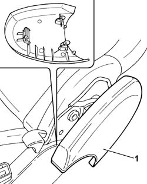
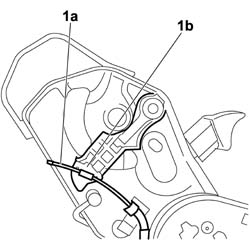
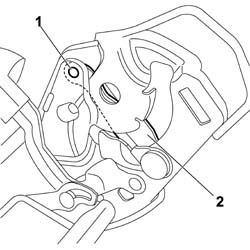

7050A32 MOUNT (ONE) FITTING REAR SEAT TO FLOOR - R R
- Path
- Procedures > 70 FITTINGS > 7050 REAR SEATS > 7050A REAR SEAT ASSEMBLY > 7050A32 MOUNT (ONE) FITTING REAR SEAT TO FLOOR - R R
- Kind
- repair procedure (removal / refitting; the operation number is the code)
- Applies to
- all engines; all production periods
- Interactive page
- https://sloeber94.github.io/elrnDB-fUlss/en/#/179007889
Applies to: all engines; all production periods
 Removing
Removing
 Refitting
Refitting- Carry out
Op. 7050A02 SIDE REAR INDIVIDUAL SEAT (ONE), LEFT OR RIGHT - R.R.
1. Release the joint cover retaining clips from the seat frame and remove.

Applies to: all engines; all production periods
- Carry out
Op. 7050A18 REAR SEAT SQUAB - R+R
1. Release the cable (1a) from the backrest joint adjustment lever (1b).

Applies to: all engines; all production periods
1. Remove the lever fastening pin using an appropriate tool.
2. Remove the backrest joint control lever with its spring.

Applies to: all engines; all production periods
Refitting
Removing- Position the lever and spring and secure in their seats.
- Connect the cable to the backrest joint adjustment lever.
- Carry out
Op. 7050A18 REAR SEAT SQUAB - R+R
- Position the joint cover in its seat by doing up the retaining clips.
- Carry out
Op. 7050A02 SIDE REAR INDIVIDUAL SEAT (ONE), LEFT OR RIGHT - R.R.